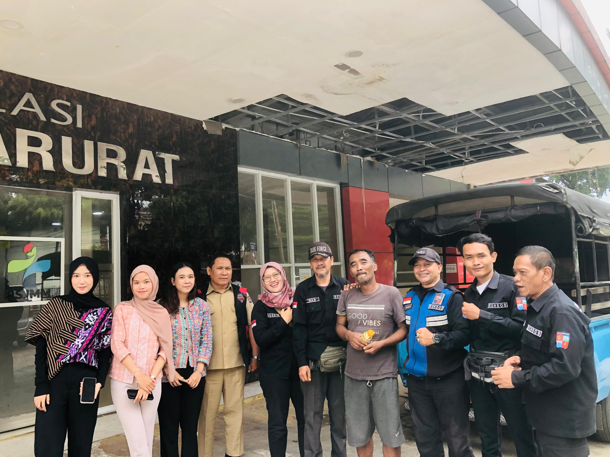
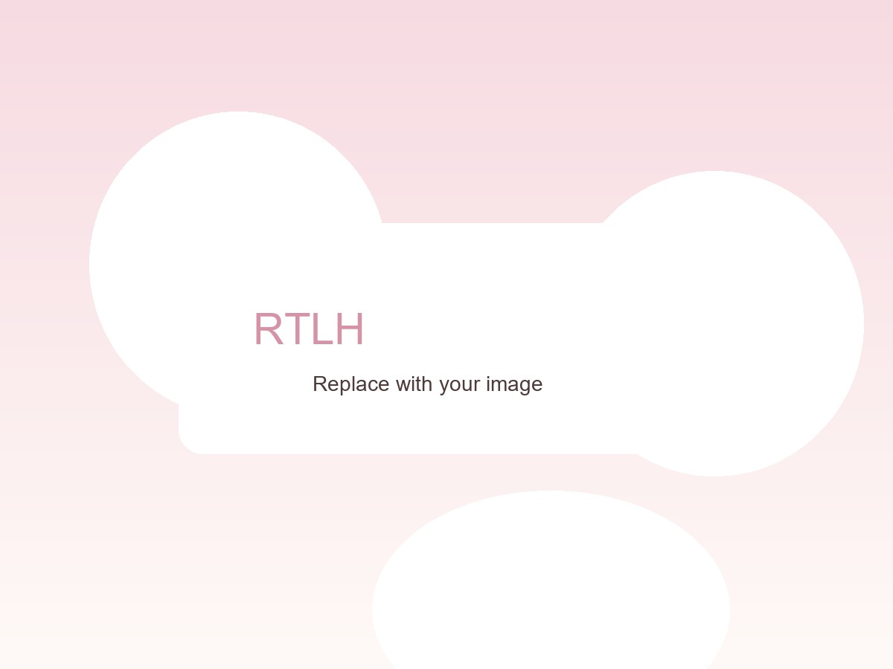
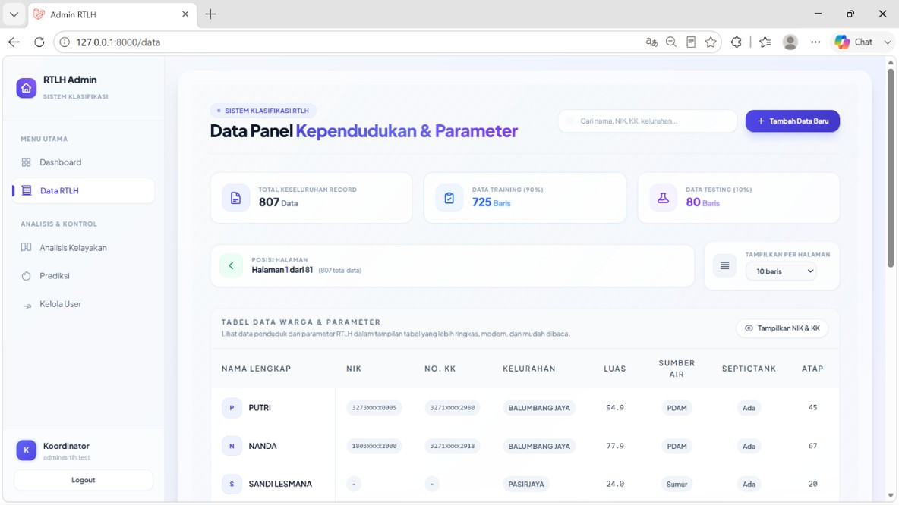
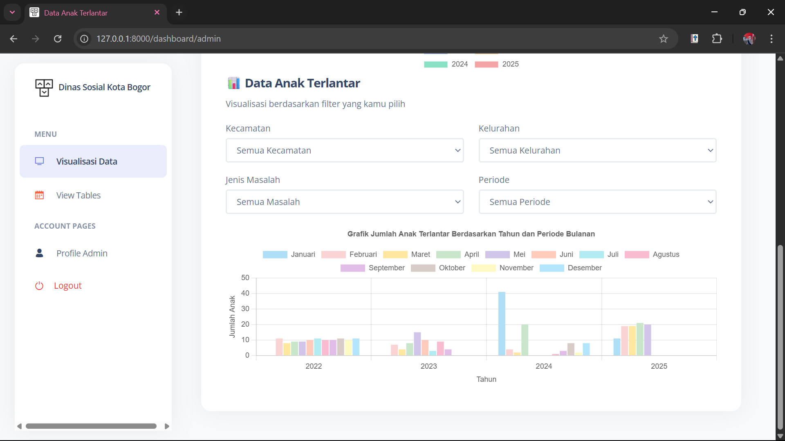
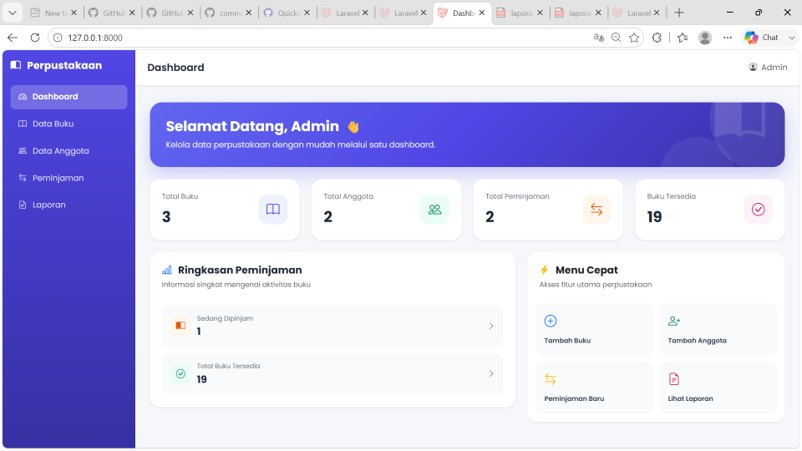
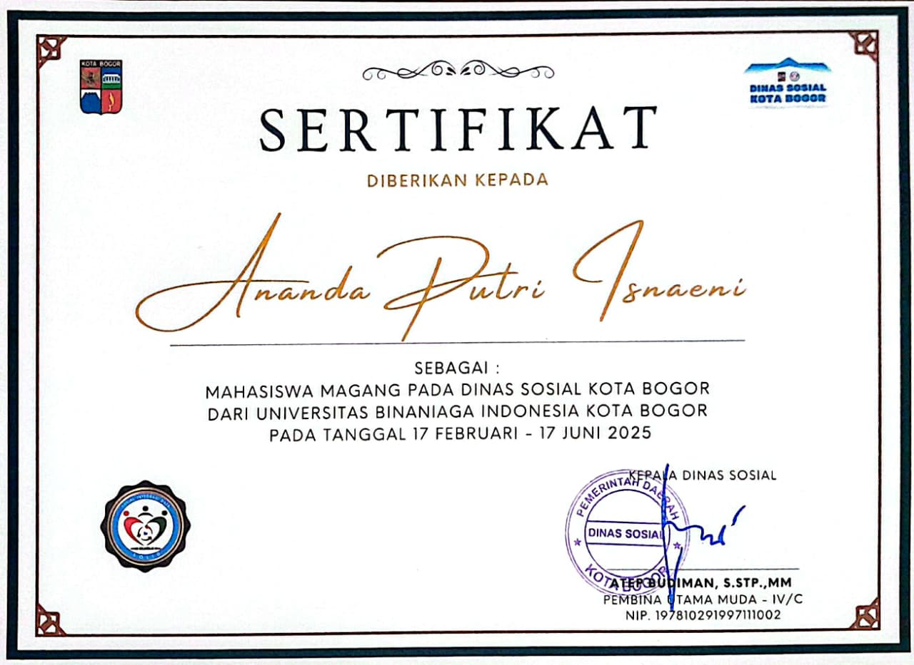
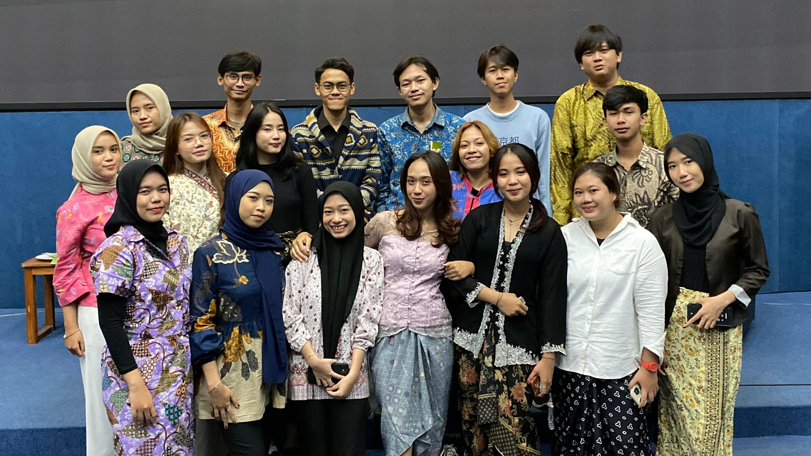
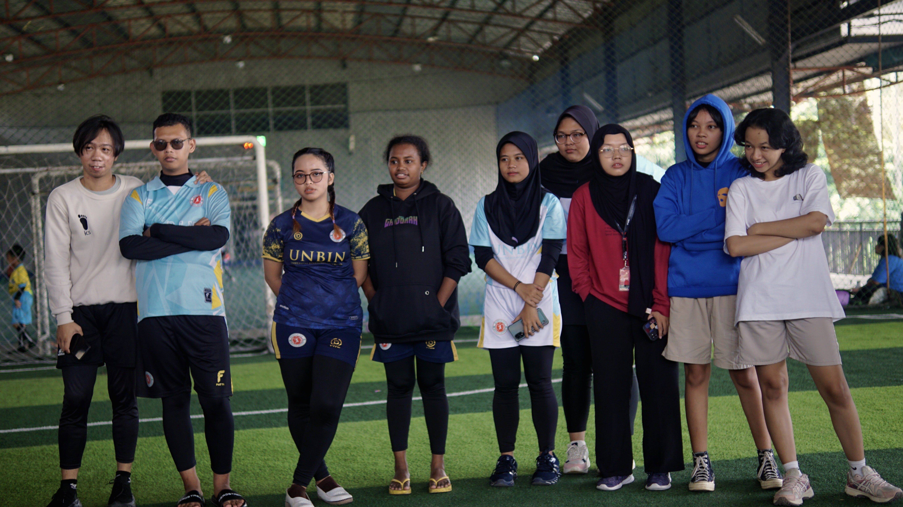
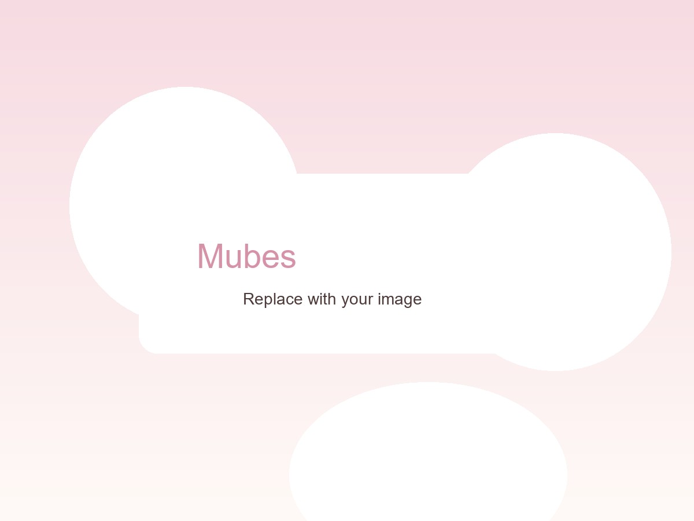
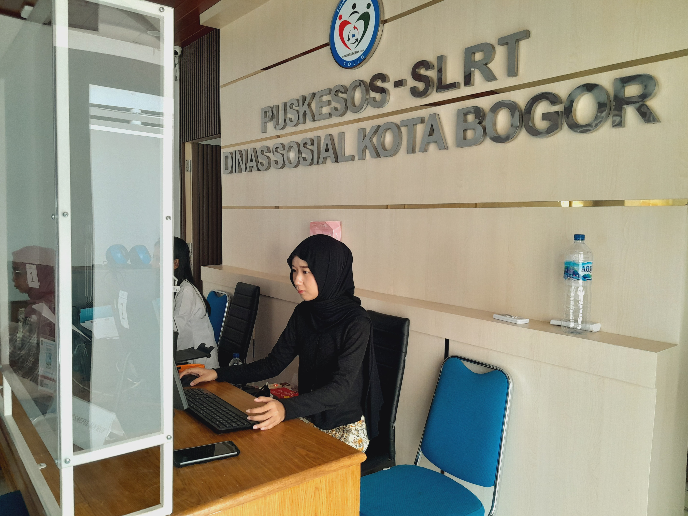

HELLO, I'M ANANDA PUTRI ISNAENI ♡
Information Systems Graduate
Aspiring Front-End Developer | UI/UX Designer | IT & Administrative Support
Saya memiliki ketertarikan pada dunia teknologi, khususnya
pengembangan web, desain antarmuka, dan administrasi teknologi
informasi. Saya senang mengeksplorasi ide, mempelajari hal-hal baru,
serta mengembangkan keterampilan untuk menciptakan solusi yang
fungsional dan bermanfaat. Melalui portofolio ini, saya membagikan
pengalaman, kemampuan, dan berbagai proyek yang telah saya kerjakan.
SCROLL TO EXPLORE ↓
01 — ABOUT ME
A little about me ♡
Memadukan Teknologi, Analisis, dan Kreativitas.
Saya Ananda Putri Isnaeni, lulusan S1 Sistem Informasi Universitas Binaniaga Indonesia dengan IPK 3,73/4.00. Saya tertarik memadukan Web Development, UI/UX Design, analisis sistem dan data, serta pengelolaan database untuk menciptakan solusi digital yang fungsional dan berangkat dari kebutuhan pengguna. Saat magang di bagian Pelayanan dan Penanganan Fakir Miskin (PFM) Dinas Sosial Kota Bogor, saya menangani input, validasi, verifikasi, dan pengolahan data serta dokumen, sekaligus terlibat dalam pengembangan aplikasi web visualisasi data anak terlantar. Berbekal PHP, Laravel, Python, MySQL, SQL, HTML, CSS, JavaScript, Chart.js, dan Microsoft Office, saya bekerja dengan teliti dan analitis, tetap kreatif dan adaptif, serta senang terus belajar.
curious mind
creative soul
tech enthusiast
02 — SKILLS
Things I love working with ♡
Web Development
- HTML
- CSS
- JavaScript
- PHP
- Laravel
- Tailwind CSS
Database & Data
- MySQL
- SQL
- Python
- Microsoft Excel
- Data Analysis
UI / UX
- UI Design
- UX Design
- Responsive Web Design
System Analysis
- UML
- System Analysis
- Data Mining
- CRISP-DM
03 — EXPERIENCE
Where I learned by doing.
Dinas Sosial Kota Bogor
IT / Data Administration Intern
Berperan dalam pengelolaan data sosial, validasi dan verifikasi data, pengarsipan dokumen, penyusunan laporan administrasi, serta pengembangan sistem informasi berbasis web.
- Validasi dan verifikasi data sosial
- Pengelolaan data administrasi
- Pengarsipan dokumen
- Penyusunan laporan administrasi
- Penggunaan sistem informasi dalam pengelolaan data
- Pengembangan Sistem Informasi Anak Terlantar

04 — FEATURED PROJECT
Sistem Klasifikasi Rumah Tidak Layak Huni (RTLH)
Web-Based RTLH Data Classification
Sistem berbasis web untuk mengelola data kependudukan dan parameter RTLH, serta membantu mengklasifikasikan rumah yang perlu diprioritaskan untuk renovasi menggunakan metode K-Nearest Neighbor (KNN).


05 — PROJECTS
A few things I've created ♡


06 — CERTIFICATES
Always learning, always growing ♡
Cisco CCNA: Introduction to Networks
Menyelesaikan pelatihan dasar jaringan komputer melalui Cisco Networking Academy.
Buka sertifikat PDF
Sertifikat Magang — Dinas Sosial Kota Bogor
Menuntaskan program magang administrasi dan pengelolaan data pada Februari–Juni 2025.
English Conversation Verbal Test
Menyelesaikan tes percakapan verbal untuk melatih komunikasi dan kepercayaan diri berbahasa Inggris.
07 — ORGANIZATIONS & ACTIVITIES
My journey beyond the classroom.

Mendukung komunikasi organisasi dan penyebaran informasi kegiatan BEM melalui koordinasi konten dan publikasi.

Mendokumentasikan rangkaian kegiatan Pekan Olahraga Binaniaga sebagai arsip dan materi publikasi acara.
Berperan dalam Divisi Acara pada kegiatan malam keakraban mahasiswa baru untuk membangun kebersamaan dan mempererat hubungan antarmahasiswa.

Terlibat dalam persiapan dan pelaksanaan agenda Musyawarah Besar BEM.
Mendokumentasikan kegiatan Artwave untuk mendukung publikasi dan penyimpanan arsip acara.

Mendukung validasi data sosial, administrasi dan pelaporan, serta pengembangan sistem informasi dan visualisasi data berbasis web.
EVERY DETAIL MATTERS.
Setiap detail berarti.
Setiap pengalaman membentuk saya.
Problem Solving
Analytical Thinking
Attention to Detail
Fast Learner
Adaptability
Teamwork
08 — LET'S CONNECT ♡
Let's create something meaningful.
Saya terbuka terhadap peluang di bidang Web Development, UI/UX Design, System Analysis, Data Analysis, IT Support, maupun pekerjaan administrasi yang berhubungan dengan teknologi.